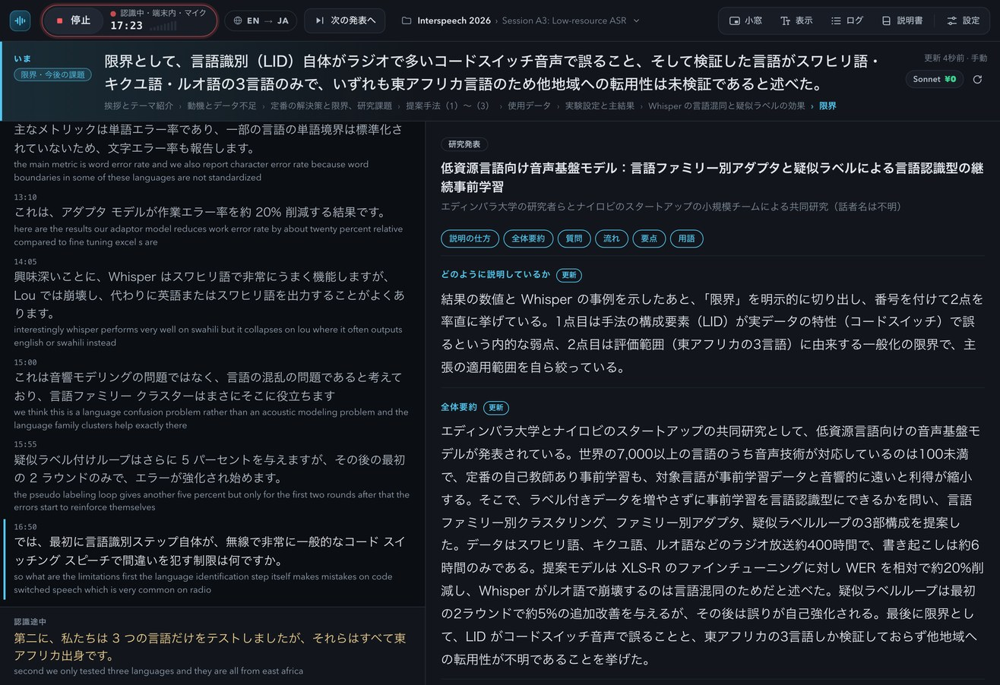
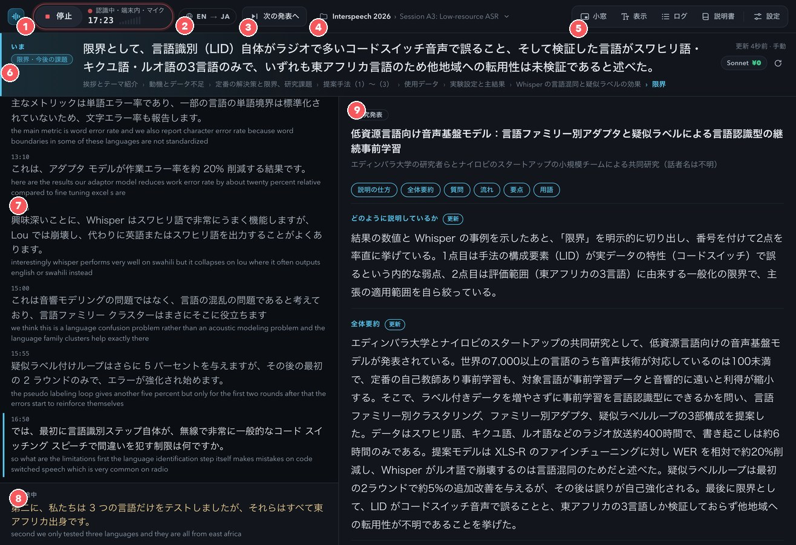
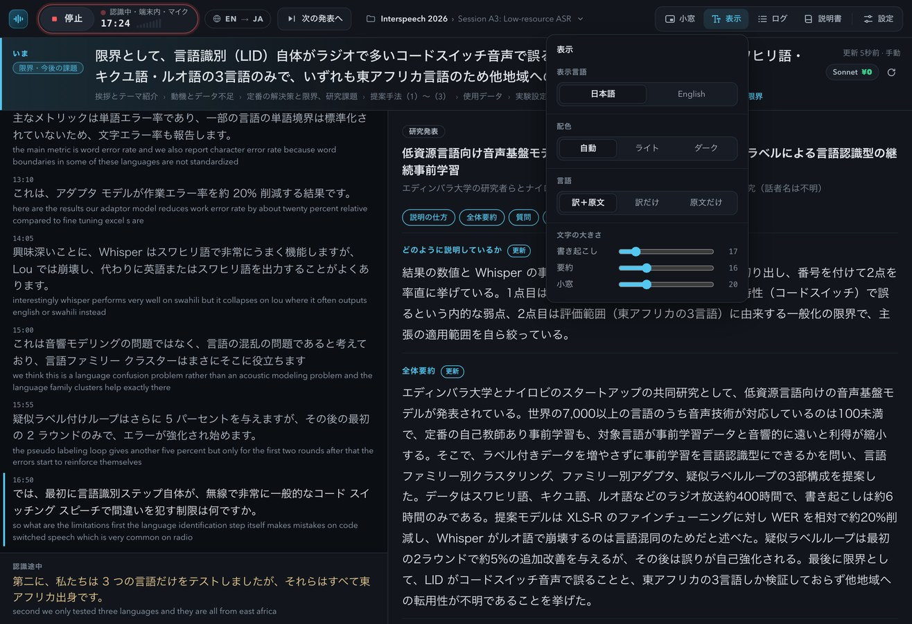
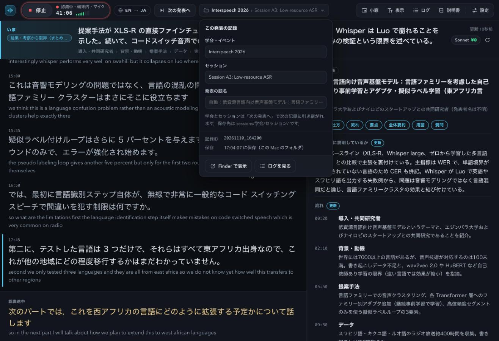
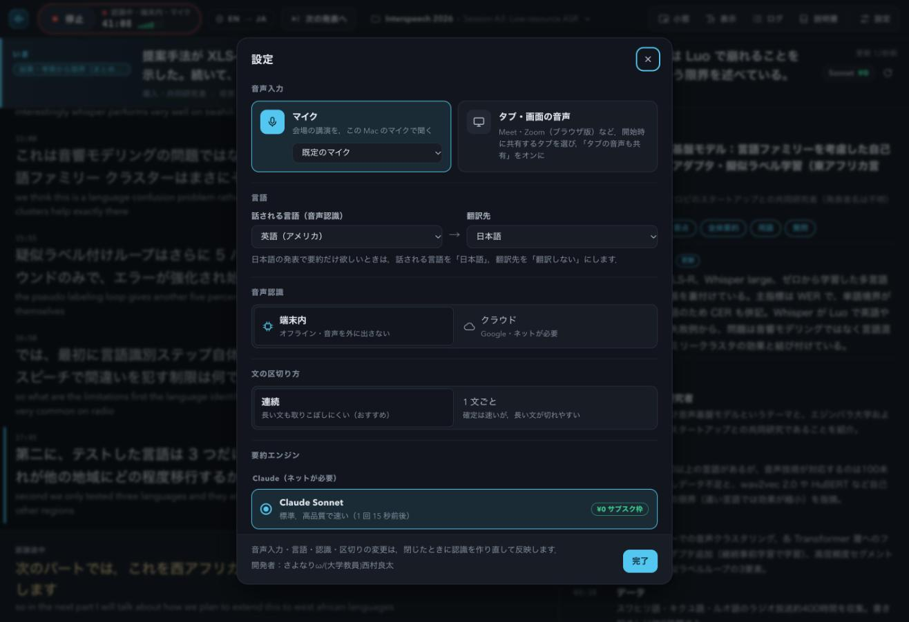
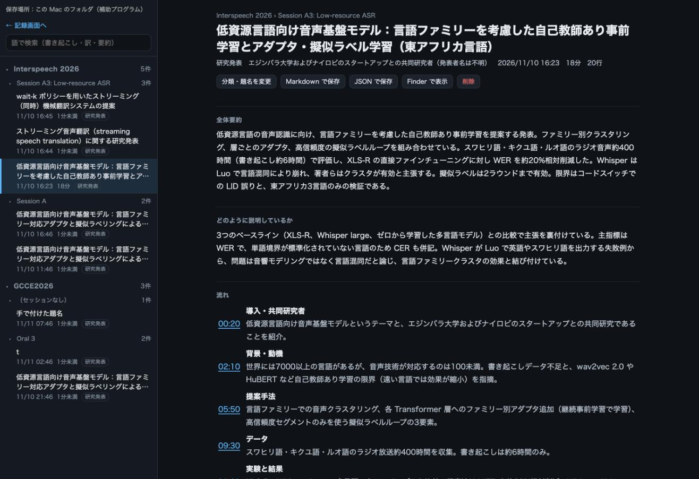

説明書
聞きながら，
訳して，まとめる．
学会通訳要約ちゃんは，講演・学会発表・会議の話し言葉を，その場で音声認識し，翻訳し，「いま何の話か」まで要約する Web アプリです．
パソコン版の Google Chrome でページを開くだけで使えます．インストールも登録も要りません．

できること
音声認識
Chrome に入っている音声認識で，話し言葉を文字にします．英語・日本語・中国語・韓国語など 20 以上の言語に対応．端末内で認識すれば，音声はパソコンの外に出ません．
翻訳
確定した文を，Chrome 内蔵の翻訳で訳します．話している途中の文も先に訳して出します．訳さずに原文だけ表示することもできます．
要約
数十秒ごとに，いま話されていること・何の発表か・どう説明しているか・流れ・要点・用語・質問の候補をまとめ直します．
学会向けの記録
発表ごとに記録を分け，「学会 › セッション」で整理して保存します．「次の発表へ」で認識を止めずに切り替えられます．
Zoom・Meet
ブラウザのタブや画面の音声も認識できます．常に手前に出る「小窓」に，最新の訳と「いまの話題」を出せます．
ログ
これまでの記録を一覧・全文検索し，要約と書き起こしを読み返せます．Markdown と JSON で書き出せます．
はじめかた
- パソコン版の Google Chrome でアプリを開きます．Windows・Mac どちらでも使えます（Chrome は最新にしてください）．
- 赤い「開始」ボタンを押します．はじめてのときは，マイクの使用を許可してください．
- 話が始まると，左に訳，上に「いま」，右に要約が出ます．止めるときは「停止」．もう一度「開始」を押すと，同じ発表の記録の続きになります．
はじめて使うときは，Chrome が音声認識・翻訳・要約のモデルを自動で取得します（数分かかることがあります）．取得が終わるまでは，音声認識だけ Google のクラウドで行います．
画面の見方

- ① 開始・停止と状態
- 赤いボタンで認識を始め・止めます．右側に認識の状態（端末内／クラウド・マイク／タブの音声），この発表の経過時間，入力の大きさが出ます．
- ② 言語
- 「EN → JA」のように，話される言語と翻訳先を表します．押すと設定が開きます．
- ③ 次の発表へ
- 今の発表の記録を閉じて，次の発表の記録を始めます．認識は止めません．押し間違えたときは，出てくる「取り消す」で元に戻せます．
- ④ 記録先
- この発表を保存する「学会 › セッション」です．押すと，学会名・セッション名・発表の題名を入力できます．
- ⑤ 小窓・表示・ログ・説明書・設定
- 小窓は常に手前に出る小さな窓，表示は表示言語・配色（ライト／ダーク）・言語・文字の大きさ，ログは過去の記録の一覧です．
- ⑥ いま
- いま話されていることを 2 文ほどで示します．左上の印は全体の中の位置（導入・提案手法・実験 など），下の列はここまでの流れです．右上に要約の更新時刻と，要約に使っているエンジン（¥0 は追加料金なし）が出ます．
- ⑦ 書き起こし
- 大きい字が訳，小さい字が原文です．左に青い線が付いた行が，いちばん新しい発言です．上へ戻って読んでいる間に新しい行が来ると，「最新へ」ボタンが出ます．
- ⑧ 認識途中
- 話している途中の文です．確定すると上の書き起こしに移ります．
- ⑨ 要約
- 何の発表か，どのように説明しているか，流れ，要点，全体要約，用語，質問するなら，を表示します．更新された項目には「更新」の印が付きます．


設定

- 音声入力
- 「マイク」は会場の講演をパソコンのマイクで聞くとき．「タブ・画面の音声」は Meet・Zoom（ブラウザ版）などのとき．
- 言語
- 話される言語と翻訳先を選びます．日本語の発表で要約だけ欲しいときは，話される言語を「日本語」，翻訳先を「翻訳しない」にします．
- 音声認識
- 「端末内」は音声をパソコンの外に出しません（オフラインでも動きます）．「クラウド」は Google のサーバで認識します．
- 文の区切り方
- 「連続」は長い文も取りこぼしにくい設定です（おすすめ）．「1 文ごと」は確定が速い代わりに，長い文が途中で切れやすくなります．
- 要約エンジン
- 何もインストールしなくても「Gemini Nano（Chrome 内蔵 AI）」で要約できます．補助プログラムがあれば，Claude（Sonnet・Haiku・Opus）やローカル LLM も選べます．
- 要約の更新間隔
- 20 秒・40 秒・90 秒・手動から選びます．
学会で使う
- セッションが始まる前に，上の記録先（フォルダの印）を押して，学会名とセッション名を入れます．
- 発表が始まったら「開始」．
- 次の発表に移ったら 「次の発表へ」．学会名とセッション名は引き継がれます．認識は止まりません．
- 休憩で止めたいときは「停止」．再開しても同じ発表の続きになります．
会場のスピーカーから遠いと認識が落ちます．前の方の席に座るか，外付けマイクを使うと精度が上がります．
Zoom・Meet で使う
- 設定の「音声入力」で 「タブ・画面の音声」 を選びます．
- 「開始」を押すと，共有するタブを選ぶ画面が出ます．会議のタブを選び，「タブの音声も共有する」をオンにします．
- 「小窓」を押すと，最新の訳と「いまの話題」が常に手前に出ます．会議の画面の横に置いて使えます．
Zoom はブラウザ版で参加すると，同じ手順で使えます．
ログ（記録の一覧と検索）

上の「ログ」から開きます．「学会 › セッション › 発表」の順に並び，語で全文検索できます．発表を選ぶと，要約・流れ・用語・その時々の話題・書き起こしを読み返せます．流れの時刻を押すと，その時刻の書き起こしへ移ります．Markdown・JSON での保存，分類や題名の変更もここでできます．
補助プログラムが無いときは，記録はこのブラウザの中に保存されます．別のパソコンへ移すときは，ログ画面の「すべて書き出す」と「読み込む」を使ってください．
補助プログラム（Claude・ローカル LLM・フォルダ保存）
補助プログラムは，パソコンの中で動く小さなプログラムです．動かしておくと，次のことができるようになります．
- Claude で要約：Claude Code にログインしていれば，サブスクの枠内（追加料金なし）で Claude Sonnet などを使って要約できます．
- ローカル LLM で要約：Ollama のモデル（qwen3 など）で，ネットなしで要約できます．必要なときだけモデルを読み込み，使わなくなると外します．
- 記録をフォルダに保存：sessions/学会/セッション/ に Markdown と JSON で保存します．
準備
- GitHub から一式を取得します（「Code」→「Download ZIP」，または
git clone https://github.com/sayonari/tsuyakuYouyakuChan.git）． - Python 3 が必要です（Mac には入っています）．Claude で要約するなら Claude Code をインストールしてログイン，ローカル LLM を使うなら Ollama とモデル（例：
ollama pull qwen3:8b）を入れます． - 取得したフォルダで
python3 server.pyを実行します（Mac はstart.commandをダブルクリックでも可）． - アプリの「設定」→「補助プログラム」→ 「接続を確認」．Chrome から「ローカル ネットワーク上のデバイスへのアクセス」の確認が出たら許可してください．
補助プログラムは，このパソコンの中（127.0.0.1）だけで待ち受けます．このアプリ以外のサイトからの要約・保存・削除の呼び出しは断ります．
ネットが無いところで
音声認識を「端末内」にし，要約を「Gemini Nano」かローカル LLM にすると，ネットにつながっていなくても動きます（はじめに一度，ネットにつながった状態でモデルを取得しておいてください）．Claude を選んでいてネットが切れたときは，補助プログラムがその回だけローカル LLM で代わりに要約します．
データの行き先
| 処理 | どこで |
|---|---|
| 音声認識（端末内） | このパソコンの中だけ |
| 音声認識（クラウド） | Google のサーバに音声が送られます |
| 翻訳 | このパソコンの中だけ（Chrome 内蔵） |
| 要約（Gemini Nano・ローカル LLM） | このパソコンの中だけ |
| 要約（Claude） | 書き起こしの文字が，あなたの Claude Code を通して Anthropic に送られます |
| 記録 | このブラウザの中，または補助プログラムのフォルダ．どこにも公開されません |
非公開の会議では，音声認識を「端末内」，要約を「Gemini Nano」かローカル LLM にすると，内容がパソコンの外に出ません．録音・記録については，会の決まりや話し手の意向に従ってください．
よくある質問
スマホで使えますか？
今はパソコン版の Google Chrome だけです．Chrome の内蔵翻訳と内蔵 AI が，スマホ版にはまだ無いためです．
お金はかかりますか？
アプリは無料です．Chrome の音声認識・翻訳・Gemini Nano も無料です．Claude で要約するときは，あなたの Claude のサブスクの枠を使います（API キーで動かしている場合は従量課金になります．設定の要約エンジンに「従量課金」と出ます）．
認識結果が出ません．
マイクが許可されているか，入力の大きさ（開始ボタンの右のバー）が動いているかを確かめてください．端末内の認識で結果が出ないときは，設定の「音声認識」をクラウドにすると直ることがあります．
長い文が途中で切れます．
設定の「文の区切り方」を「連続」にしてください．短い断片は，直前の行につなげて訳し直します．
要約が出ません．
右上の要約エンジンの表示を見てください．Claude やローカル LLM は補助プログラムが必要です．Gemini Nano は，はじめにモデルの取得が必要です（Chrome が自動で行います）．
発表の途中で画面が暗くなりませんか？
認識中は，このページが表示されている間，画面がスリープしないようにしています（停止すると元に戻ります）．別のタブやアプリを前に出したとき，PC の蓋を閉じたときは，OS の設定どおりにスリープします．
明るい画面で使えますか？
「表示」の「配色」でライトを選んでください．「自動」は OS の設定に合わせます．
別の講演の記録に混ざりました．
「停止→開始」は同じ発表の続きです．別の発表にするときは「次の発表へ」を押してください．ログ画面で分類や題名を直せます．